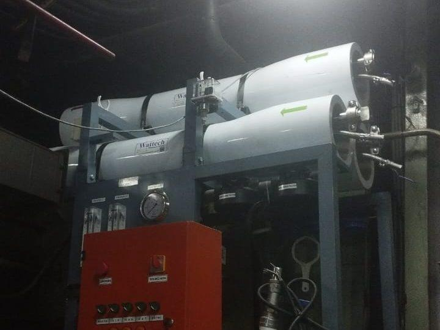
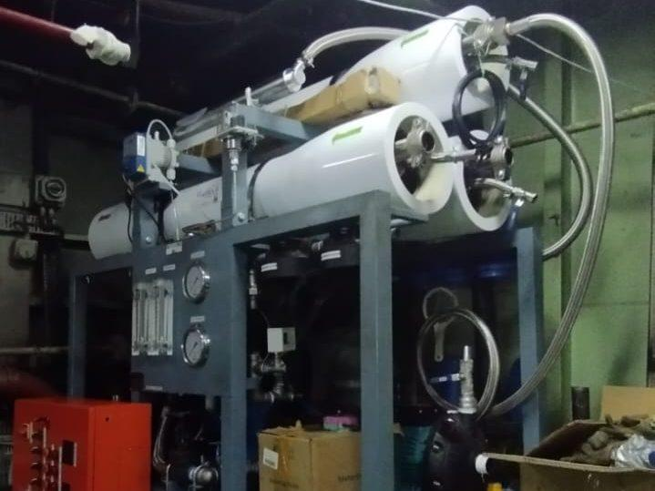

| Klien | TNI Angkatan Laut Republik Indonesia — Armada Kapal Perang |
|---|---|
| Lokasi | Berbagai pangkalan TNI AL — operasional di perairan Indonesia |
| Tipe Sistem | Sea Water Reverse Osmosis (SWRO) Watermaker untuk Kapal Perang |
| Kapasitas Produk | 2 ton/hari (kapal patroli) hingga 30 ton/hari (kapal kombatan), tergantung kelas |
| Sumber Air | Air laut langsung intake dari sea chest kapal |
| Kualitas Output | TDS < 500 ppm, layak minum awak kapal sesuai Permenkes |
| Konfigurasi | Compact pre-treatment + SWRO + ERD + post-treatment, marine grade |
| Sertifikasi | Sesuai standar BKI dan persyaratan operasional TNI AL |
| Status | Multiple unit aktif beroperasi di armada TNI AL |
Latar Belakang Proyek
Kapal Perang Republik Indonesia (KRI) yang beroperasi di laut lepas membutuhkan pasokan air tawar mandiri selama misi operasional. Bagi armada TNI Angkatan Laut yang menjaga kedaulatan perairan Indonesia — dari Selat Malaka hingga Laut Arafura — kemampuan menghasilkan air tawar langsung dari air laut adalah keniscayaan strategis. KRI tidak dapat bergantung pada pengisian air dari pelabuhan saat sedang patroli atau operasi panjang.
TSM telah dipercaya TNI AL untuk membangun watermaker SWRO bagi lebih dari 12 unit Kapal Perang RI dari berbagai kelas dan kapasitas. Beberapa unit yang tercatat dalam portofolio TSM antara lain:
- KRI AMY — Pangkalan Surabaya, SWRO 20 ton/hari (Juli 2023)
- KRI Dewa Kembar — Dismatal Pondok Dayung, SWRO 24 ton/hari × 2 unit (Maret 2022)
- KRI Sultan Iskandar Muda 367 — SWRO 30 ton/hari (Agustus 2024)
- KRI Kambani — SWRO 30 ton/hari (November 2024)
- KRI TSR 542 — SWRO 30 ton/hari × 2 unit (November 2024)
- KRI Patimura, KRI Cut Nyak Dien, KRI Sutanto, KRI Tengku Umar, KRI Sutedi Senoputra 378, KRI Silas Papare 386, KRI SPICA — Pangkalan Fasharkan Jakarta, SWRO 2.000 LPD masing-masing (Juni 2020)
Setiap unit dirancang sesuai kebutuhan kelas kapal — dari watermaker compact 2.000 LPD untuk kapal patroli, hingga sistem SWRO 30 TPD untuk kapal kombatan dan amfibi besar. Halaman ini fokus pada studi kasus KRI AMY Surabaya sebagai contoh implementasi standar yang menjadi dasar untuk berbagai unit lain.
Yang membedakan watermaker untuk kapal perang dari sistem SWRO darat adalah persyaratan operasional militer yang ketat: tahan getaran tinggi, footprint sangat compact, beroperasi di kondisi laut buruk (sea state tinggi), dan tahan terhadap kondisi salt-spray korosif. Dokumen sertifikasi BKI dan persetujuan teknis TNI AL adalah syarat mutlak.
Tantangan Watermaker Kapal Perang
1. Footprint & Berat yang Sangat Terbatas
Setiap meter kubik dan setiap kilogram di kapal perang berharga. Watermaker harus dirancang dengan footprint minimal menggunakan komponen marine-grade yang compact: high-pressure pump axial piston bukan multi-stage centrifugal yang besar, vessel pendek dengan elemen membran 4040 atau 8021, dan piping yang ringkas.
2. Tahan Getaran & Sea State
Kapal di laut tidak diam — terdapat getaran konstan dari mesin propulsi dan gerakan kapal akibat ombak. Sistem watermaker harus vibration-resistant di semua komponen: pompa dengan flexible coupling, vessel mounting dengan damping pad, piping dengan support yang adequate, dan koneksi listrik dengan cable strain relief. Sistem juga harus dapat beroperasi pada sea state hingga 5 (gelombang 2,5-4 meter) tanpa hilangnya kinerja.
3. Material Tahan Korosi Salt-Spray
Lingkungan kapal perang sangat korosif. Semua komponen yang terpapar atmosfer kapal harus marine-grade SS-316L atau super duplex. Komponen yang kontak air laut menggunakan material yang lebih tinggi lagi (titanium untuk heat exchanger jika ada, super duplex untuk vessel dan piping). Konektor listrik dan sensor menggunakan IP66+ rating.
4. Reliability di Lingkungan Operasional
Saat di laut, watermaker tidak dapat menerima service eksternal. Kerusakan harus dapat diperbaiki oleh awak kapal dengan tools dan spare parts onboard. Ini berarti desain yang serviceable, dokumentasi maintenance yang detail, training operator yang mendalam, dan kit spare parts strategis yang dibawa di kapal.
5. Sertifikasi BKI & Standar Militer
Setiap peralatan di KRI harus tersertifikasi sesuai standar Biro Klasifikasi Indonesia (BKI) dan persyaratan TNI AL. Ini mencakup: dokumentasi material certificate untuk vessel pressure-bearing, electrical certification untuk panel dan kabel, EMC compliance untuk komponen elektronik, dan testing performance pada kondisi operasional.
Solusi yang Diimplementasikan
TSM merancang watermaker SWRO compact yang memenuhi semua persyaratan tersebut:
Pre-treatment Compact
- Sea chest filter stainless steel dengan basket strainer untuk debris kasar
- Cartridge filter 25 µm + 5 µm dual-stage untuk pembersihan halus
- Dosing antiscalant proporsional dengan flow
- Dosing biocide non-oxidizing jika kapal port-call lama (untuk mencegah bio-fouling)
Tidak menggunakan multi-media filter atau UF karena keterbatasan footprint — pre-treatment di-design untuk air laut lepas yang relatif bersih (bukan air pelabuhan industri).
SWRO Compact Skid
- High-pressure pump Cat Pumps plunger atau Danfoss APP axial piston (tergantung versi) untuk efisiensi optimal pada skala compact
- Vessel SS-316L atau super duplex dengan elemen Dow Filmtec SW30HRLE-4040 (compact 4-inch)
- ERD turbocharger untuk recovery energi pada skala ini
- Recovery 35-40% — optimal untuk kapal yang punya akses tak terbatas ke air laut tapi terbatas listrik
Post-treatment & Storage
- Remineralisasi calcite cartridge untuk menambah Ca dan menetralisir pH
- UV sterilizer untuk disinfeksi terminal sebelum storage
- Storage tank SS-316L dengan vent filter dan UV recirculation
Marine-Grade Construction
- Skid frame painted dengan marine 3-layer epoxy
- Semua koneksi listrik dengan IP66+ junction box
- Vibration mount untuk pompa dan vessel
- HMI dan kontrol dengan IP65 enclosure stainless steel
- Dokumentasi material certificate lengkap untuk audit BKI
Hasil & Dampak Operasional
- Kapasitas konsisten — Output sesuai spesifikasi tiap unit (20-30 ton/hari tergantung kelas KRI) pada kondisi operasi normal, tidak terganggu sea state hingga 5
- Kualitas air — TDS <500 ppm, memenuhi Permenkes 492/2010 untuk air minum
- Operability — Awak kapal dapat mengoperasikan sistem dengan training 3 hari, troubleshooting dasar dapat dilakukan onboard
- Reliability — Operasi puluhan ribu jam tanpa kegagalan major sejak commissioning
- Footprint — Sistem fit dalam ruang mesin yang dialokasikan KRI tanpa modifikasi struktur kapal
Yang lebih penting dari angka teknis: kontribusi terhadap kemandirian operasional KRI dalam menjalankan tugas menjaga kedaulatan perairan Indonesia. Awak kapal tidak perlu menghitung jatah air saat operasi panjang — mereka memiliki air tawar segar yang dihasilkan langsung dari laut.
Lessons Learned untuk Aplikasi Maritim
- Compact bukan berarti compromise quality — Engineering watermaker yang baik dapat mencapai kualitas air laut darat dalam footprint sepersepuluh-nya, asalkan komponen kritis (pompa, membran, ERD) tetap tier-1.
- Marine-grade adalah investasi, bukan beban — Komponen marine-grade memang lebih mahal di awal, tapi durability di lingkungan salt-spray jauh lebih baik. Penggantian komponen non-marine setiap 2-3 tahun lebih mahal jangka panjang.
- Documentation untuk BKI sangat detail — Setiap material certificate, weld traceability, electrical certification harus tersedia. Tim TSM telah mengembangkan template dokumentasi yang sesuai BKI sehingga proses approval lebih cepat untuk proyek berikutnya.
- Training mendalam untuk awak kapal — Watermaker di kapal harus dapat dioperasikan dan di-maintenance oleh awak yang bukan engineer. Training 3-5 hari dengan troubleshooting hands-on sangat berharga.
- Spare parts kit onboard — Filter cartridge, O-ring set, sensor calibration kit, dan setidaknya 1 elemen membran spare harus tersedia onboard. Tanpa ini, masalah kecil bisa menjadi masalah besar di tengah laut.
Galeri Foto Proyek
Foto sistem dan instalasi di lokasi:




Pertanyaan yang Sering Diajukan
Apa beda watermaker kapal perang dengan SWRO komersial?
Lima perbedaan utama: (1) Footprint & berat — kapal perang sangat terbatas. (2) Vibration resistance — semua komponen harus tahan getaran propulsi. (3) Material — semua eksterior marine-grade SS-316L minimum, eksposur air laut super duplex. (4) Sertifikasi BKI — wajib dengan dokumentasi lengkap. (5) Serviceability onboard — awak kapal harus dapat operasi dan troubleshoot tanpa engineer eksternal.
Berapa konsumsi listrik watermaker KRI ini?
Sekitar 5-6 kWh per m³ produksi — lebih tinggi dari SWRO darat skala besar (3-4 kWh/m³) karena skala compact dan ERD turbocharger yang efisiensinya lebih rendah dari ERD isobaric chamber pada SWRO besar. Untuk watermaker 20-30 ton/hari, total konsumsi 100-180 kWh/hari yang masih dalam batas kapasitas listrik kapal.
Apakah watermaker dapat beroperasi saat kapal di port?
Ya, bahkan disarankan untuk diaktifkan secara berkala saat di port untuk mencegah biofouling membran. Untuk port yang air laut tercemar industri/pelabuhan, watermaker biasanya di-offline dan kapal mengisi air dari shore connection — kemudian watermaker di-flush dan di-CIP saat keluar port.
Berapa lama umur membran SWRO di kapal?
Dengan operasi yang baik dan flush rutin saat docking, membran SWRO compact di kapal bertahan 4-6 tahun — sedikit lebih singkat dari SWRO darat (5-7 tahun) karena exposure ke variasi kualitas air laut yang lebih luas dan kondisi operasional yang lebih variabel. TSM menyediakan suplai membran replacement sebagai bagian kontrak service.
Bisakah TSM membangun watermaker untuk kapal komersial atau pesiar?
Tentu. Konfigurasi dasar sama (compact, marine-grade, vibration-resistant), tapi sertifikasi mungkin berbeda — SOLAS dan IMO untuk kapal komersial internasional, BKI untuk kapal lokal. TSM telah membangun watermaker untuk kapal offshore Wintermar dan kapal pendukung industri migas. Diskusikan kebutuhan spesifik dengan tim engineer kami.
Tertarik Solusi Serupa untuk Operasi Anda?
Tim engineering TSM siap mendiskusikan kebutuhan water treatment Anda dengan referensi proyek serupa yang sudah terbukti. Konsultasi awal gratis tanpa komitmen.
📋 Konsultasi Proyek Anda →